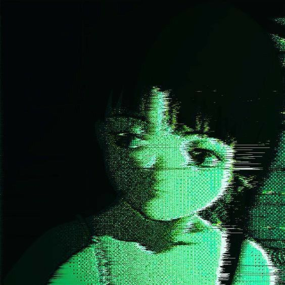

Música

Embarquei em um trem enquanto a garoa continuava a cair sobre a estação. O céu estava cinzento, e o vento frio atravessava a plataforma, fazendo todo mundo se encolher dentro dos próprios casacos. Sentei-me junto à janela e fiquei observando as gotas de chuva deslizarem pelo vidro, acompanhando o caminho que faziam enquanto o trem avançava.
O interior do trem era dominado por uma monotonia pesada. Os passageiros seguravam os corrimãos com força, com olhos distantes que denunciavam suas mentes longe dali; outros se isolavam em seus fones de ouvido ou em conversas virtuais que talvez não fossem tão relevantes assim, e, também, tinham aqueles que, exaustos pelo dia, cochilavam em posturas incômodas, rendidos à fadiga.
Enfim.. cada um deles estava dando seu jeito de suportar aquela rotina recorrente, embora todos tivessem o mesmo objetivo: voltar pra casa e aliviar a tensão do corpo e da mente depois de um dia que demandou muito e ofereceu pouco em troca.
Eu entendo eles, também faço parte desse grupo.
Eu, assim como eles, estava voltando do trabalho, mas não estava voltando pra casa, infelizmente. Eu estava indo pra casa da Ashley.
Mais cedo, quando eu e o resto do grupo deixávamos a escola após o término das aulas, ela anunciou, com aquele entusiasmo de sempre, que estaria organizando uma festinha do pijama para nós. O evento, segundo ela, começaria às 19h.
Eu, claro, recusei.
Disse que não fazia a menor ideia de onde tiraria energia pra isso depois do meu expediente que, vale dizer, tinha sido um porre que só. Mas, como eu já esperava, minha tentativa de fuga não deu muito certo. Ashley, acompanhada do restante da galera, fez questão de me pressionar até que a ideia de não ir se tornasse inviável.
Como pode ver, deu certo.
A vibração insistente do meu celular me arrancou do transe que eu mantinha diante da janela do ônibus. Ao acender a tela pra ver o motivo da interrupção, o nome de Kenda apareceu em destaque.
"Deve estar querendo saber onde eu me meti.", pensei, enquanto tocava na notificação, sendo redirecionada para o aplicativo de mensagens. A curiosidade venceu qualquer resquício de distração, e meus olhos desceram pela tela, prontos pra ver o que quer que ela quisesse comigo.

"Eu sabia.", pensei, desligando a tela do meu celular e voltando minha atenção para qualquer lugar do trem, deixando os meus pensamentos correrem acompanhados pelo ruído monótono do trem que ecoava em meus ouvidos.
U detalhe que eu tinha esquecido de mencionar, nada irrelevante, diga-se de passagem, é que eu não tinha pijama nenhum. Pois é. Mesmo com toda a insistência deles, não vou mentir que ainda tive em mim uma certa resistência que estava me encaminhando a não ir pra essa festa, o que fez com que eu sequer perdesse tempo procurando algo que pudesse servir como tal antes de trabalhar.
Quase me xinguei por essa falta de planejamento gerada pela minha indecisão ignorante. Mas logo percebi que não fazia sentido dramatizar a situação. Ashley é o tipo de pessoa que coleciona roupas como quem coleciona hobbies: compra de tudo, em todos os estilos imagináveis. E não, não digo isso como uma força de expressão. O volume do guarda-roupa dela chega a ser desconcertante de tão excessivo. Diante disso, concluí que ela teria um pijama sobrando pra me emprestar. Sendo assim, meio que tava tudo sob controle.
Alguns minutos se arrastaram, e o cansaço começou a cobrar seu preço. O sono vinha devagar, pesado, e eu já permitia que minhas pálpebras se fechassem aos poucos, rendendo-me à ideia de descansar até chegar ao meu destino. No entanto, no exato momento em que cedi, um ruído abrupto de passos ecoou pelo corredor. Instintivamente, abri um dos olhos, ainda que a contragosto.
Um homem alto, envolto por um capuz, avançava pelo ônibus, avaliando cada assento disponível. Não parecia apressado; ao contrário, seus movimentos eram tranquilos. Em dado momento, percebeu o lugar vazio ao meu lado e, sem hesitar, acomodou-se ali. Sua presença se impôs como uma sombra espessa invadindo meu espaço pessoal.
Os olhos dele, parcialmente ocultos pelo capuz cinzento, causaram-me um desconforto difícil de nomear. Eram profundos, opacos, lembrando buracos negros capazes de absorver qualquer vestígio de luz ao redor. A sensação persistente de que havia algo profundamente errado naquele sujeito contaminou o ambiente inteiro; o clima antes apenas melancólico transformou-se em algo perturbador.
E ali ele ficou, imóvel, mais parecido com um espectro do que com um passageiro comum.
Eu até me repreenderia, diria a mim mesma que tudo aquilo não passava de preconceito barato, fruto de um julgamento precipitado. Convenceria meu próprio senso crítico de que ele era apenas um sujeito estranho, nada além disso. Como eu disse, eu faria isso, se não tivesse acontecido o gesto que congelou minha alma por completo.
Senti um toque no meu joelho. Não foi um esbarrão acidental, nem um movimento descuidado causado pela falta de espaço. Aquilo foi intencional.
Meu corpo reagiu antes mesmo que minha mente conseguisse processar o que estava acontecendo. Comecei a tremer de forma incontrolável, os olhos presos no vazio, arregalados, incapazes de sequer considerar encarar aquele homem novamente. Tentei afastar a perna, romper aquele contato invasivo e sufocante. Em resposta, ele deslizou o joelho lentamente em minha direção outra vez, reafirmando sua presença de forma cruel, como se estivesse saboreando cada segundo daquela situação, se deleitando com aquilo, como o doente que era.
Aquele inferno se estendeu por intermináveis oito minutos. O tempo parecia dilatado, distorcido. Quando finalmente não aguentei mais, fui tomada por uma crise de ansiedade violenta. Gritei, num desespero quase animalesco, e me afastei dele de imediato. Olhei ao redor, soluçando, clamando por qualquer pessoa que pudesse me ouvir, que pudesse me ajudar.
Mas quando dei por mim.. não tinha ninguém.
O trem estava completamente vazio.
Eu estava sozinha. Presa dentro de um trem em movimento, dividindo aquele espaço com aquele homem, sem testemunhas, sem socorro, sem saída imediata. Mas nada daquilo fazia sentido, eu sabia que não. Eu podia jurar que o trem estava lotado.
Pra onde todo mundo tinha ido? O que aconteceu?
Meu olhar percorreu o corredor à frente e, então, eu o vi: ele estava parado bem diante de mim. Seus olhos atravessavam minha pele, fixos, vorazes, como um predador faminto que se alimentava do meu medo e do meu desespero.
Como um vulto arrancado da escuridão, ele avançou sobre mim sem aviso.
Suas mãos se fecharam em torno do meu pescoço com uma força brutal, e o aperto veio rápido, impiedoso, como se não houvesse qualquer hesitação naquele gesto. Instintivamente, tentei reagir, me debater, arranhar, lutar de alguma forma, mas meu corpo parecia fraco demais diante da violência dele. Cada movimento era inútil, cada tentativa, esmagada com facilidade.
Em poucos instantes, senti o ar escapar dos meus pulmões, como se estivesse sendo drenado à força. Minha visão começou a falhar; as cores ao meu redor desbotaram, a luz se dissolveu em sombras indefinidas, e o mundo perdeu contorno e sentido. O som se tornou distante, abafado, como se eu estivesse sendo empurrada para fora da realidade.
A última coisa que consegui fazer, antes de tudo finalmente se apagar, foi gritar por socorro dentro da minha própria cabeça, que jamais saiu da minha garganta.
Depois disso, não restou mais resistência.
E então, eu cedi.
Acordei em um sobressalto, sendo arrancada à força de um lugar que eu não conseguia identificar direito.
Levei alguns segundos até compreender onde estava. Eu me encontrava sentada em uma das cadeiras da área de espera da estação de metrô para a qual havia vindo originalmente. Olhei ao redor, ainda desorientada, e logo notei que o espaço estava vazio demais. Nenhum funcionário à vista, nenhum passageiro atrasado, nenhum som humano. Nada. Apenas eu e o silêncio pesado daquele lugar, quebrado apenas pela presença de um trem parado à minha frente, aguardando para ser usado, como se estivesse ali exclusivamente por minha causa.
Com um aperto no peito, puxei o celular para conferir as horas. O horário exibido na tela me fez gelar. Era muito mais tarde do que eu imaginava: 00h40. Além disso, a tela estava tomada por notificações. Várias mensagens da Kenda se acumulavam, como se ela estivesse tentando me alcançar havia tempo demais.
Diante daquilo, fechei os olhos por alguns segundos, tentando organizar os pensamentos e acalmar a respiração. Levei a mão até o pescoço quase por instinto, procurando por marcas, hematomas, qualquer vestígio do aperto que eu jurava ter sentido. Mas não havia nada, minha pele estava intacta e não havia nenhuma dor real. Foi então que a explicação mais racional se impôs: eu devia ter apagado enquanto esperava pelo trem. O cansaço acumulado do trabalho tinha me vencido. Provavelmente tentei tirar apenas um cochilo enquanto aguardava o metrô, mas o corpo decidiu ir além e simplesmente desabou em sono profundo.
Levantei-me da cadeira com um movimento lento e soltei um suspiro longo, carregado de alívio. Agradeci mentalmente aos céus por tudo aquilo não ter passado de um delírio, nada mais. Com essa sensação de segurança, preparei-me para caminhar em direção ao trem parado à minha frente.
Mas, no instante em que dei o primeiro passo…
Senti uma mão agarrar meu rosto com força brutal, comprimindo minha mandíbula e tapando minha boca, impedindo qualquer som de escapar.